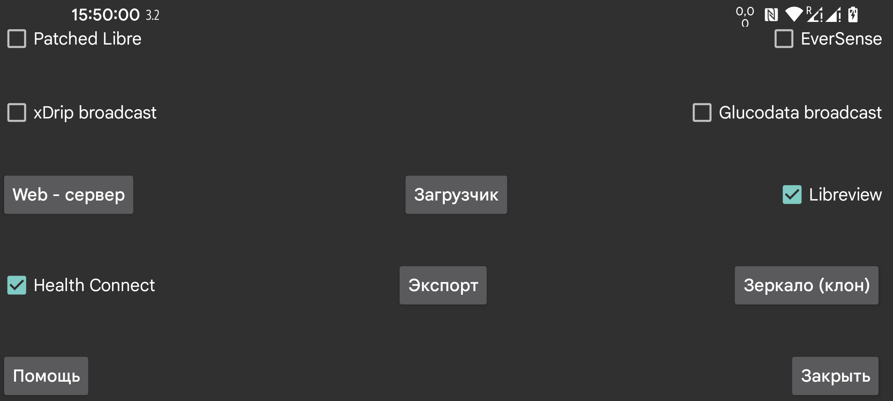

ar de es hi it ja ko nl pl ru tr uk uz en
Отправляет поминутные значения глюкозы в Health Connect. Можно дать другим приложениям доступ к этим значениям глюкозы, например Google Fit. Другие приложения, в свою очередь, могут получать эти данные из Google Fit.
Соединение с Libreview для отправки значений глюкозы Freestyle Libre 2 и 3 и введенных количеств в Libreview, а также для получения account id, использованного при активации датчика Freestyle Libre 3. Нажмите, чтобы изменить настройки.
С самой трансляцией Patched Libre ничего неправильного нет, но xDrip изменяет значения, когда получает их из трансляции Patched Libre. Поскольку пользователи используют эту трансляцию только таким образом, я планировал удалить ее.
xDrip не изменяет значения, когда получает значения глюкозы из трансляции EverSense или когда веб-сервер Juggluco используется как источник данных Nightscout.
Еще одна трансляция глюкозы. Ее можно использовать для отправки значения глюкозы в xDrip каждую минуту. В xDrip нужно установить 640G/EverSense как Hardware Data Source.
xDrip проигнорирует почти все эти значения из-за своего требования одного значения за 5 минут. Это ограничение можно удалить, изменив исходный код xDrip. Измените 4 * 60 * 1000 на 55 * 1000 в app/src/main/java/com/eveningoutpost/dexdrip/models/BgReading.java, чтобы получилось:
public static BgReading readingNearTimeStamp(long startTime) { long margin = (55 * 1000); return readingNearTimeStamp(startTime, margin); }
Преимущество перед трансляцией Patched Libre в том, что xDrip не преобразует значения глюкозы каким-то неуказанным образом.
Отправляет ту же трансляцию, что и xDrip: «Settings → Inter-app settings → Broadcast locally». Такие приложения, как AndroidAPS, ее слушают. В отличие от исходной трансляции xDrip, которая передавалась каждые 5 минут, Juggluco отправляет эту трансляцию каждую минуту, когда датчик отправляет значение глюкозы каждую минуту.
Новая трансляция с той же функцией, что и трансляция xDrip. Пример простого приложения, которое записывает полученные значения глюкозы в logcat, можно найти здесь: Glucose broadcasts. Если вы указываете Juggluco как источник данных в G-Watch, нужно включить эту трансляцию.
Показываются приложения, слушающие эту трансляцию. Отметьте приложения, которым вы хотите отправлять эту трансляцию.
Веб-сервер, который можно использовать с часами xDrip и некоторыми приложениями Nightscout. Ранее назывался веб-сервером xDrip.
Загрузка на сервер Nightscout.
Отправляет все данные через интернет-соединение в другой экземпляр Juggluco, создавая тем самым клон Juggluco на другом устройстве. Существующие данные будут перезаписаны.
Сохраняет данные в файл.